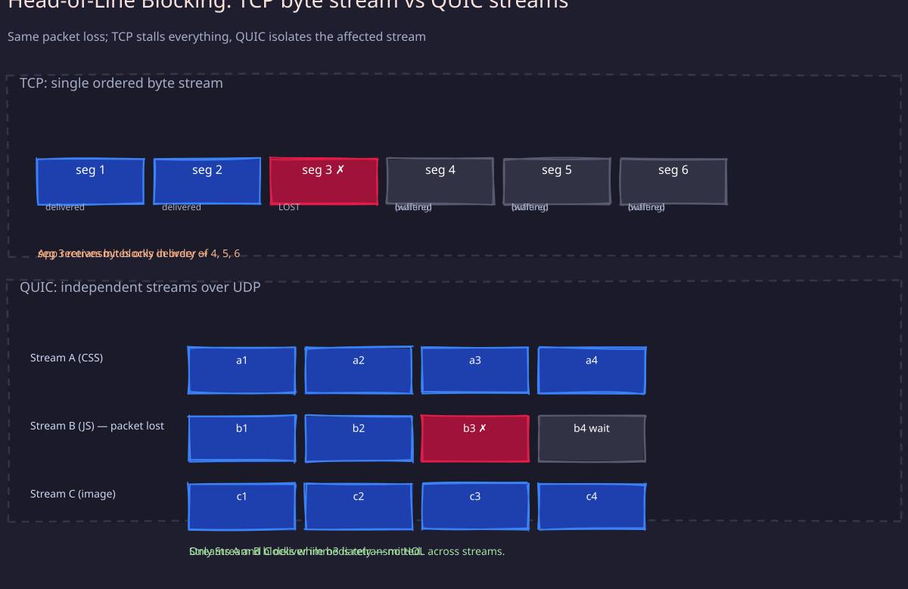
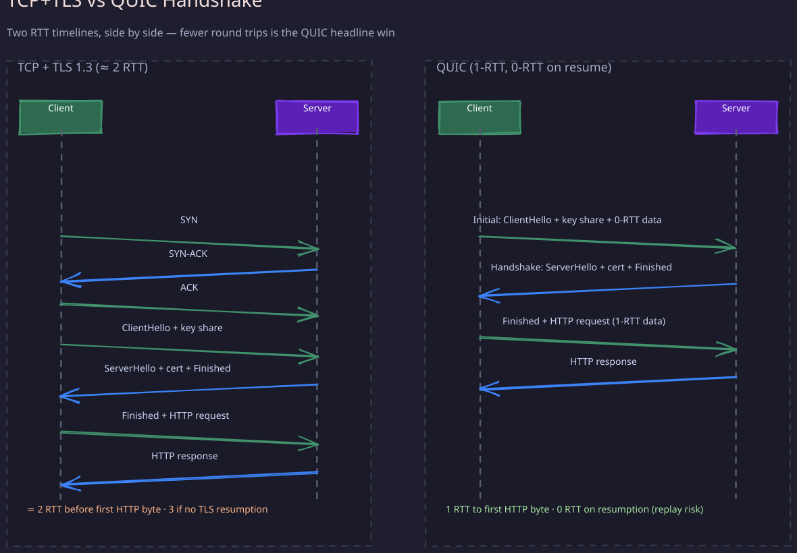

Transport protocols decide what guarantees the application gets from the network. The wrong choice silently caps your throughput, doubles your tail latency, or forces you to reinvent reliability in user space. Staff engineers should be able to reason about why a given system picked TCP, UDP, or QUIC, and what that choice costs at scale.
1. Mental Model: What the Transport Layer Owes You
A transport protocol takes a stream of application bytes/messages and gets them to the peer over an unreliable IP layer. The peer’s IP network can:
- drop packets
- reorder packets
- duplicate packets
- corrupt packets
- delay packets unboundedly
The transport decides which of these problems it hides and which it exposes. Three orthogonal questions define every transport:
- Reliability: do lost packets get retransmitted?
- Ordering: are bytes delivered to the application in send order?
- Connection state: is there a handshake, a congestion window, a flow window?
TCP says yes to all three. UDP says no to all three. QUIC says yes to all three but redesigns how they are done.
2. TCP — The Reliable Byte Stream
1. What TCP Gives You
TCP delivers an ordered, reliable, byte-oriented stream between two endpoints, with flow control and congestion control. The application sees a single FIFO of bytes; framing is the application’s job.
Key invariants:
- Every byte gets an unbounded number of retransmits until ACKed (or the connection dies).
- Bytes are delivered to the application strictly in send order. The receiver buffers out-of-order segments until the gap is filled.
- The sender never sends faster than the receiver’s advertised window (flow control) or the network’s estimated capacity (congestion control).
2. The Three-Way Handshake
Connection establishment costs one round trip before any data flows:
- Client → Server:
SYN(with client ISN and options: MSS, window scale, SACK permitted, timestamps) - Server → Client:
SYN-ACK(with server ISN and matching options) - Client → Server:
ACK(can carry payload — this is what makes it 1 RTT)
Implication: every new TCP connection pays 1 RTT before the first request byte. Across the Atlantic (~70ms RTT) that is a 70ms floor. This is why HTTP keep-alive and connection pools exist.
3. Congestion Control (the part that matters at scale)
Congestion control is what keeps the internet from collapsing. The sender maintains a congestion window (cwnd) — the maximum bytes in flight. Effective send rate is min(cwnd, rwnd) / RTT.
Phases:
- Slow start:
cwnddoubles every RTT until a threshold or loss. - Congestion avoidance:
cwndgrows by 1 MSS per RTT (linear). - Loss event: classic TCP halves
cwnd(multiplicative decrease).
Algorithms you should know:
- Reno / NewReno: the textbook AIMD algorithm. Loss-based.
- CUBIC: Linux default since 2006. Cubic growth function — recovers from losses faster on high-BDP links.
- BBR (Google, 2016+): models the bottleneck bandwidth and RTT directly instead of treating loss as the congestion signal. Dramatically better on lossy or buffer-bloated paths; widely deployed on YouTube and
google.com.
Staff-level insight: loss-based algorithms (CUBIC, Reno) confuse random wireless loss with congestion. On Wi-Fi or 4G/5G, BBR can double throughput without hurting fairness. This is why a CDN engineer cares which tcp_congestion_control sysctl is set on the edge box.
4. Flow Control, Nagle, and Delayed ACKs
- Flow control uses the
rwndadvertised in every ACK. If the receiver’s app is slow,rwndshrinks and the sender stalls. - Nagle’s algorithm coalesces small writes to avoid stuffing the network with tiny segments. It interacts badly with delayed ACKs (receiver waits up to 200ms to ACK in the hope of piggybacking data). The pathology: small request → Nagle holds it waiting for ACK → receiver delays ACK waiting for more data → 200ms stall. Fix:
TCP_NODELAYfor any latency-sensitive protocol (HTTP, RPC). - Bandwidth-Delay Product (BDP) = bandwidth × RTT. The send and receive buffers must be at least BDP for the link to fill. On 1 Gbps × 100ms = 12.5 MB. Default Linux buffers used to be 64 KB — that capped throughput at ~5 Mbps on a transcontinental link. Modern kernels auto-tune, but you still need to verify on a new path.
5. Head-of-Line Blocking
Because TCP guarantees in-order byte delivery, a single lost segment stalls every byte queued behind it until the retransmission arrives. For a single stream this is fine. For protocols that multiplex independent logical streams over one TCP connection (HTTP/2, multiplexed gRPC), one lost packet stalls every concurrent stream. This is the central problem QUIC was built to solve.

6. TIME_WAIT and Connection Cost
After close, a TCP socket sits in TIME_WAIT for ~60s (2 × MSL) to absorb stray late segments. On a busy load balancer initiating connections to a backend, ephemeral ports exhaust at ~28K connections in any 60s window. Mitigations: connection pooling, SO_REUSEPORT, increase port range, use long-lived connections (HTTP/2, gRPC).
3. UDP — The Datagram Primitive
1. What UDP Gives You
UDP gives you exactly two things over IP: a 16-bit source port, a 16-bit destination port, a length, and a checksum. That’s it. Each sendmsg becomes one datagram; the receiver gets it whole or not at all.
What UDP does not give you:
- no handshake
- no reliability
- no ordering
- no flow control
- no congestion control
- no connection state in the kernel
2. When to Use UDP
Use UDP when at least one of these is true:
- Loss is preferable to delay: voice, video, gaming. A late packet is worse than a missing one.
- You need multicast/broadcast: TCP cannot do these.
- Request/response is single-shot and small: DNS query/response fits in one datagram each way.
- You’re building your own transport on top: QUIC, WireGuard, proprietary game protocols. You take the wire and add only what you need.
3. The MTU Trap
The biggest UDP footgun. IP fragmentation is allowed but unreliable in the wild — many middleboxes drop fragmented packets. Keep UDP payloads under ~1200 bytes if you cross the public internet, or implement path MTU discovery (PMTUD) yourself. DNS, QUIC, and WireGuard all cap their initial packets specifically for this reason.
4. UDP Is “Connectionless” but Kernels Still Cache State
A connect()-ed UDP socket binds to a peer and lets the kernel skip the route lookup per packet — a real throughput win for high-PPS workloads. Some kernels also use UDP “connections” to scale GRO/GSO and RSS.
4. QUIC — TCP Reinvented Over UDP
QUIC was started at Google in 2012, standardized as RFC 9000 in 2021, and is the transport for HTTP/3. It runs over UDP because deploying a brand-new transport directly over IP is impossible — middleboxes drop anything that isn’t TCP or UDP.

1. What QUIC Fixes
QUIC takes everything TCP+TLS gives you and fixes the parts that hurt at scale:
- 0-RTT and 1-RTT handshakes: cryptographic and transport handshake are combined. New connections take 1 RTT (vs TCP’s 1 RTT + TLS’s 1–2 RTT). Resumed connections take 0 RTT — the client sends data with the first packet.
- No head-of-line blocking across streams: QUIC has first-class streams. A lost packet only blocks the stream(s) it carried bytes for, not the whole connection.
- Connection migration: a QUIC connection is identified by a Connection ID, not the 4-tuple. A phone switching from Wi-Fi to LTE keeps the same QUIC connection alive. TCP would have torn down and rebuilt.
- Always encrypted: TLS 1.3 is baked in — there is no unencrypted QUIC. Even the transport metadata (ACKs, packet numbers) is protected. This prevents middlebox ossification, the reason TCP can never be evolved.
- Pluggable congestion control in user space: Linux ships QUIC implementations (msquic, quiche, picoquic) in user space, so you can deploy BBRv3 or experimental algorithms per-app without a kernel upgrade.
2. The Cost
- CPU: QUIC processing is in user space, per-packet, with per-packet AEAD. Early QUIC at Google cost ~3.5× the CPU of TCP+TLS. Hardware offload (GSO/GRO for UDP, AES-NI, AES-GCM in NICs) has closed most of the gap but it’s still measurably more.
- UDP throttling: many enterprise and mobile networks rate-limit or block UDP. Production HTTP/3 deployments always fall back to HTTP/2 over TCP.
- Implementation maturity: TCP is 40+ years of tuning. QUIC stacks are still finding edge cases — especially around congestion control, large flows, and middlebox interactions.
3. Streams in QUIC
Each connection has many streams. Streams are typed:
- Bidirectional / unidirectional
- Client-initiated / server-initiated
A stream is essentially a TCP-like reliable byte sequence, but losses only block its own bytes. HTTP/3 maps one request/response pair to one bidirectional stream.
5. Side-by-Side Decision Matrix
| Property | TCP | UDP | QUIC |
|---|---|---|---|
| Reliability | Yes | No | Yes (per stream) |
| Ordering | Yes (global) | No | Yes (per stream) |
| Connection setup | 1 RTT | 0 RTT | 1 RTT (0 RTT resumed) |
| Encryption | Separate (TLS) | None | Built-in (TLS 1.3) |
| Head-of-line blocking | Yes | N/A | Per-stream only |
| Connection migration | No | N/A | Yes |
| Multicast | No | Yes | No |
| Kernel or user space | Kernel | Kernel | User space |
| Middlebox friendliness | Excellent | Good | Poor on some networks |
| CPU per byte | Low | Lowest | Higher |
6. How to Pick
A reasoning checklist for an interview or a design doc:
- Does the application need reliable, ordered delivery? If no → UDP (or QUIC if you also want encryption + flow control).
- Does it open many short-lived connections? If yes → QUIC or HTTP/2 keep-alive to amortize handshake.
- Do clients roam across networks (mobile)? If yes → QUIC’s connection migration is a real win.
- Is the link lossy or has high BDP (mobile, satellite, transcontinental)? If yes → prefer BBR or QUIC over loss-based TCP.
- Is the payload tiny and single-shot (DNS, NTP, metrics)? UDP.
- Does the network drop or rate-limit UDP (enterprise, some mobile carriers)? You must keep TCP as a fallback.
7. Operational Knobs Every Staff Engineer Should Know
sysctl net.ipv4.tcp_congestion_control— switch to BBR on edge boxessysctl net.core.rmem_max/wmem_max— must be ≥ BDP for long-fat pipesSO_REUSEPORT— let multiple worker threads accept on the same port (avoids accept-mutex contention)TCP_NODELAY— disable Nagle for latency-sensitive RPCTCP_QUICKACK— disable delayed ACKs on the receiverSO_KEEPALIVE+TCP_KEEPIDLE/INTVL/CNT— detect dead peers behind NATnet.ipv4.tcp_fin_timeout— shorten TIME_WAIT pressurenet.ipv4.ip_local_port_range— expand ephemeral port range on LBs- UDP:
SO_SNDBUF/SO_RCVBUF, GSO/GRO segment size,SO_REUSEPORTfor sharded receive queues
Revision Summary
- TCP gives reliable, ordered, congestion-controlled byte streams at the cost of 1 RTT handshake and global head-of-line blocking.
- UDP gives unreliable datagrams and nothing else — you build everything on top. Keep payloads ≤ 1200 bytes to survive the internet.
- QUIC is TCP+TLS rebuilt over UDP: per-stream HoL, 0-RTT resumption, connection migration, always-encrypted, user-space congestion control. Pays for it in CPU and middlebox compatibility.
- Congestion control choice (CUBIC vs BBR) materially changes throughput on lossy/high-BDP paths.
- Tail-latency pathologies — Nagle + delayed ACK, small buffers vs BDP, TIME_WAIT port exhaustion — are operational knobs, not theoretical concerns.
Deep Understanding Questions
- Your service shows P99 latency spikes at multiples of 200ms but the server logs say the request completes in 5ms. What is happening at the transport layer and how do you confirm it?
- A mobile client opens a TCP connection on Wi-Fi, switches to LTE in an elevator, and the next request hangs for 30 seconds before failing. Walk through every layer that could cause this and which transport choice would fix it.
- Your load balancer fronting 200 backends starts dropping connections at exactly 28,000 outbound connections per 60-second window. Diagnose the cause and list four mitigations in order of operational cost.
- Why can TCP never adopt a fundamentally new congestion control algorithm at the wire level, but QUIC can ship a new one per-application? What does this say about why QUIC was deployed over UDP rather than as a new IP protocol number?
- You replace HTTP/2-over-TCP with HTTP/3-over-QUIC for an API serving small JSON responses. Latency drops on cellular networks but CPU usage on your edge fleet doubles. Explain both effects and decide whether to roll forward or back.
- A satellite link has 1 Gbps bandwidth and 600ms RTT. Your TCP throughput tops out at 1 MB/s. Compute the BDP, identify two settings that are wrong, and predict the throughput after fixing them.
- DNS uses UDP for queries but switches to TCP for responses over 512 bytes (or larger with EDNS0). What does this design tradeoff teach you about when to use each transport for request/response workloads?
- Why does QUIC’s “always encrypted” property protect the protocol itself from ossification, and how is that different from “encryption is good for privacy”?